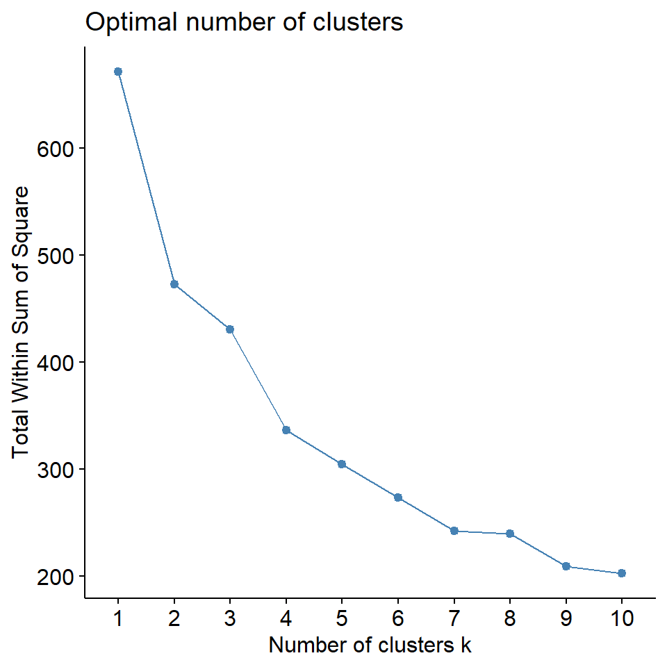
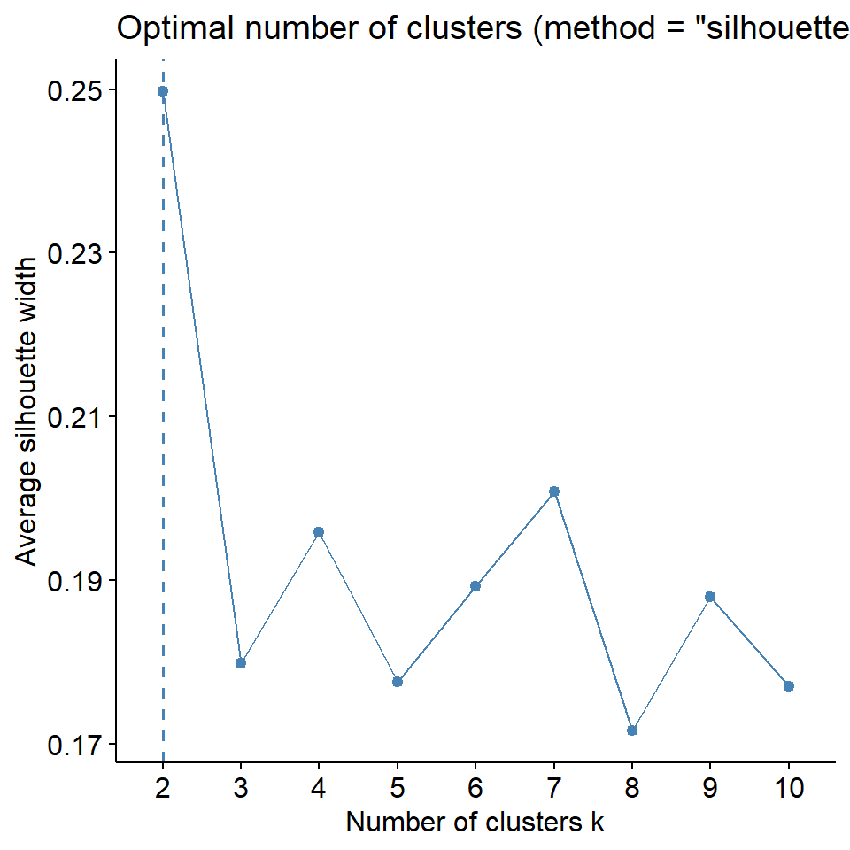
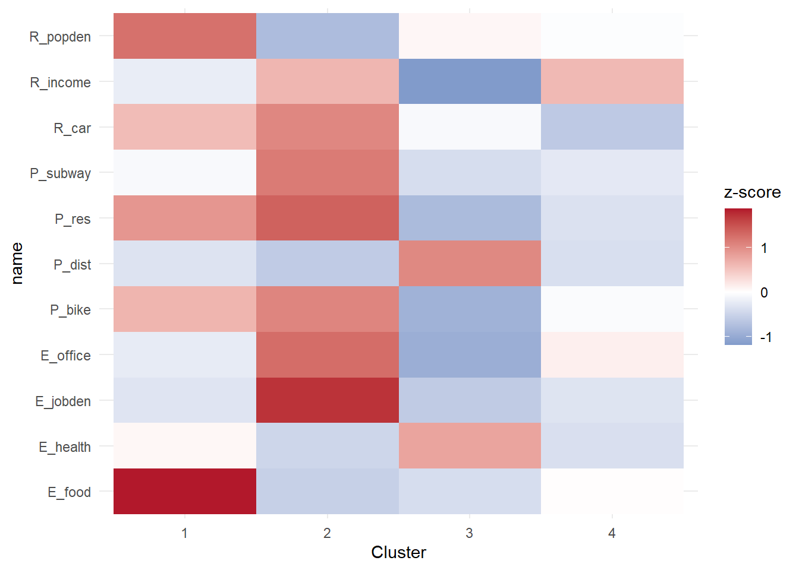
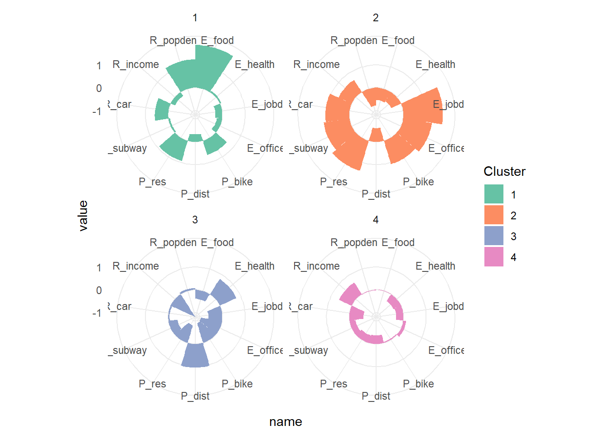
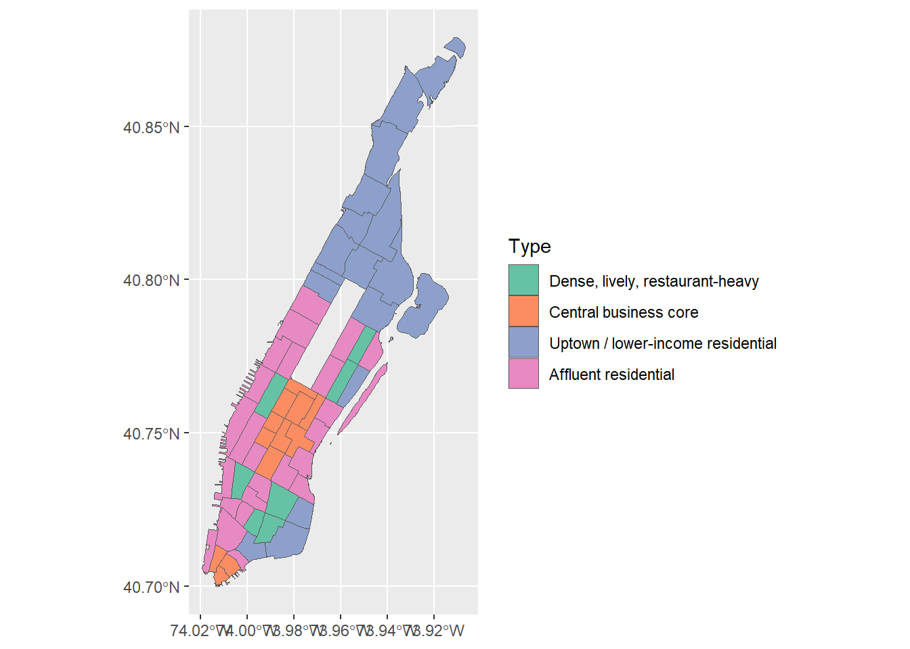
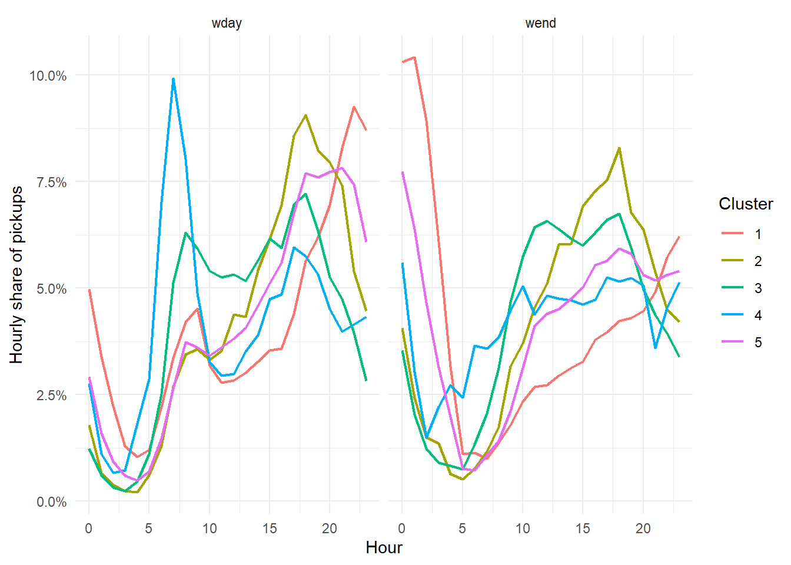
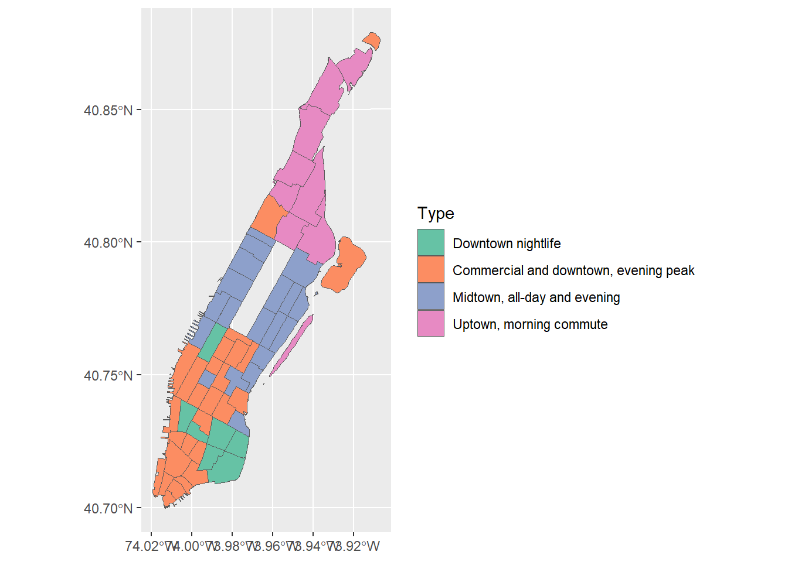

# install.packages("factoextra")
library(tidyverse)
library(ggplot2)
library(sf)
library(factoextra)Cluster Places by Characteristics and Use in 
11.118/11.218 Applied Data Science for Cities
Overview
Clustering means grouping observations so that members of the same group are similar to each other and different from members of other groups. In urban analytics, we can use clustering to group neighborhoods by their characteristics, group stations by their ridership, articles by their topics, households by their profile, etc. In general, it lets us ask how observations are similar in multiple dimensions at once.
Running a clustering analysis typically involves five steps:
- Prepare the variables you cluster on.
- Scale the columns so that they are comparable.
- Choose the number of clusters.
- Run a clustering algorithm (k-means, hierarchical, etc.).
- Interpret: profile each cluster, give each cluster a name, and map the result.
In this lab we return to the Manhattan taxi zone data from Lab 7, and cluster the zones in two different ways. Each answers a different question:
- K-means on land use: what kind of place is each zone? (people, jobs, income, restaurants, transit)
- Hierarchical clustering on taxi pickup patterns: how is each zone used through the day and the week?
The data we use today
We use three files for the 62 taxi zones in Manhattan.
manhattan_taxi_zones.csvhas one row per zone and describes what the zone is like: population, households, jobs (total, office, health, hotel and food), restaurants, bike docks and subway stations.manhattan_taxi_trips_2026_09.csvhas one row per zone, per hour, on weekdays or weekends, with the average number of taxi pickups.taxi_zones.geojsonhas the boundary of each taxi zone, so we can map the results.
zones <- read_csv("data/manhattan_taxi_zones.csv")
trips <- read_csv("data/manhattan_taxi_trips_2026_09.csv")
zones_map <- st_read("data/taxi_zones.geojson")K-means: Cluster Zones by Land Use
Prepare the data
We will first focus on manhattan_taxi_zones.csv and look for zones that are similar in their land use characteristics. For interpretation later on, it helps to organize the variables by what they describe. Ours fall into a few dimensions of a place: residential characteristics (who lives there), employment (what jobs are there), and what the place is like, such as commercial activity and transportation connections.
While organizing the variables, we can name them with a prefix: R_ for residential, E_ for employment, P_ for place, just for easy interpretation. Turn the raw counts into rates and densities so that we describe the characteristics of a zone instead of its size. We also leave out the ID and name columns, because we only want to cluster on the characteristics.
zones_data <- zones |>
mutate(
# Residential characteristics
R_popden = population / area_sqmi,
R_car = households_no_car / households,
# Socioeconomic characteristics
R_income = median_income,
# Employment characteristics
E_jobden = jobs / area_sqmi,
E_office = office_jobs / jobs,
E_health = health_jobs / jobs,
E_food = hotel_food_jobs / jobs,
# Commercial activity
P_res = restaurants / area_sqmi,
# Transportation infrastructure
P_bike = citibike_docks / area_sqmi,
P_subway = subway_stations / area_sqmi,
# Geographic centrality
P_dist = dist_times_sq
) |>
select(
R_popden, R_car,
R_income, E_jobden:P_subway, P_dist
)Scale the data
Clustering is based on distance between observations in a multidimensional space. Our variables are still on very different scales: a density can be in the thousands per square mile, while a share is between 0 and 1. The variables with the largest numbers would dominate the distance and decide which zones count as “close”. So we bring all variables to the same scale with scale(), the z-score we have used before. Every variable then has mean 0 and standard deviation 1, so each contributes comparably to the distance.
zones_scale <- scale(zones_data)Choose the number of clusters
The k-means algorithm places k “centers” in the data, assigns every observation to its nearest center, moves each center to the mean of the observations assigned to it, and repeats until nothing changes. The result is k groups that are internally compact.
But we have to tell it k. A few diagnostics can help. The package factoextra provides fviz_nbclust(), which runs k-means for a range of k and plots a quality measure.
- Elbow method (
"wss"). Plots the total within-cluster sum of squares against k. It always decreases as k grows, so we look for the “elbow”, the point after which adding more clusters brings only small improvements.
fviz_nbclust(zones_scale, kmeans, method = "wss")
- Silhouette method (
"silhouette"). For each observation, the silhouette compares how close it is to its own cluster with how close it is to the nearest other cluster. We look for the k with a high average silhouette.
fviz_nbclust(zones_scale, kmeans, method = "silhouette")
These diagnostics give guidance, not an answer. A lot of times, like this one, there is no obvious “elbow”, and the statistically best solution (such as 2 clusters: downtown and everything else) may be too coarse to capture the diversity. Our analysis objective is to identify meaningful urban typologies. So in practice we try a few simple alternatives, such as k = 3, 4 or 5, a relatively parsimonious solution that lets you explain urban variation without creating too many small clusters. Here we first go with k = 4.
Run k-means algorithm
K-means starts from random positions, so we use set.seed() to get the same result every time.
In the kmeans() function, we put in the scaled data and the number of clusters (centers = 4). With nstart = 100, the algorithm runs from 100 different random starting positions and keeps the best result, which protects against a poor random start.
set.seed(24)
km.out <- kmeans(zones_scale, centers = 4, nstart = 100)Type km.out$ in the console and you will see everything it produces: the size of each cluster, the group means (centers), and the within-cluster variance. The element km.out$cluster is a vector with one number per zone, telling which cluster that zone falls in.
km.out$cluster [1] 3 4 3 3 3 3 1 4 4 3 3 1 2 2 4 2 4 4 4 3 4 3 4 3 1 4 4 1 1 3 3 3 4 2 2 2 2 3
[39] 2 2 3 4 4 4 4 4 2 4 3 4 2 4 4 4 4 3 3 4 1 2 4 1Profile the clusters
To see what makes the clusters different, we can compare the group means of each cluster. This is the cluster profile.
km.out$centers R_popden R_car R_income E_jobden E_office E_health
1 1.24205460 0.58848985 -0.2058473 -0.3027682 -0.2314011 0.07236982
2 -0.77982720 1.05010126 0.6342332 1.7345823 1.2750038 -0.47297466
3 0.07434924 -0.06354367 -1.1882775 -0.6037539 -0.9499205 0.79516772
4 -0.02698969 -0.62307432 0.6087651 -0.3131216 0.1367333 -0.36575647
E_food P_res P_bike P_subway P_dist
1 1.87596780 0.9206867 0.64814513 -0.06705051 -0.3245896
2 -0.53880591 1.3708593 1.07244542 1.15652609 -0.5969056
3 -0.39174476 -0.7960985 -0.90302549 -0.38836338 1.0393124
4 0.01541208 -0.3426138 -0.04607608 -0.25673675 -0.3709052A table of numbers is hard to read, so let’s make a heatmap with geom_tile(). Red means the cluster is above average on that variable, and blue means below average (in z-scores).
profile <-
as_tibble(km.out$centers, rownames = "Cluster") |>
pivot_longer(-Cluster)
profile |>
ggplot(aes(x = Cluster, y = name, fill = value)) +
geom_tile() +
scale_fill_gradient2(low = "#2166ac", mid = "white", high = "#b2182b",
midpoint = 0, name = "z-score") +
theme_minimal()
Then a few differences stand out, such as Cluster 2 is high in pretty much everything, especially job density, while Cluster 1 show relatively high population density and food-related activities.
You can also make what people call a “rose diagram” to visualize the values on each dimension for each cluster. It is the same information as the heatmap, drawn as one “flower” per cluster.
profile |>
ggplot(aes(x = name, y = value, fill = Cluster)) +
geom_col(width = 1) +
coord_polar() +
facet_wrap(~Cluster) +
theme_minimal() +
scale_fill_brewer(palette = "Set2")
Name the clusters
Reading the profile, the k = 4 solution reads roughly as follows. Your cluster labels may differ, but the patterns should not.
| Cluster | Pattern in the profile | A possible name |
|---|---|---|
| 1 | High population density, very high share of hotel and food jobs, many restaurants | Dense, lively, restaurant-heavy neighborhoods |
| 2 | Very high job density, office share, subway access, restaurants and bike docks; low population density | Central business core |
| 3 | Low income, far from city center, relatively high share of health jobs | Uptown / lower-income residential |
| 4 | Higher income, fewer households without cars, otherwise close to average | Affluent residential |
We give the names to the clusters in the same order as the cluster numbers. factor() turns the cluster numbers (1 to 4) into a set order, and labels attaches the name to each accordingly.
km_names <- c("Dense, lively, restaurant-heavy",
"Central business core",
"Uptown / lower-income residential",
"Affluent residential")
km_cluster <- zones |>
select(LocationID, zone) |>
mutate(Cluster = factor(km.out$cluster),
Type = factor(km.out$cluster, labels = km_names))Note: if you used a different
set.seed()number, your cluster numbers may come out in a different order, change the order inkm_namesto match the profiles you read.
Map the clusters
We can join the clusters to the map by the shared key LocationID. The map file covers all taxi zones in New York City, and zones outside Manhattan have no cluster (NA), so filter(!is.na(Cluster)) removes them.
zones_km <- zones_map |>
select(LocationID) |>
left_join(km_cluster, by = "LocationID") |>
filter(!is.na(Cluster))
zones_km |>
ggplot() +
geom_sf(aes(fill = Type)) +
scale_fill_brewer(palette = "Set2")
Hierarchical Clustering: Cluster Zones by Pickup Patterns
Instead of what a zone is like, we can also look at how a taxi zone is used: the pattern of taxi pickups over the 24 hours, on weekdays and on weekends. Zones whose pickups rise and fall at the same hours will naturally group together, such as a morning-peak group, an evening-peak group, and a late-night group.
For this we use hierarchical clustering. As the name suggests, it produces nested groups: small groups of very similar pickup rhythm merge into larger groups, which merge into even larger ones, until all zones are in one. We get a whole tree, and we choose where to cut it to get the groups.
Prepare the data
From the table manhattan_taxi_trips_2026_09.csv, we reshape it with pivot_wider(), giving one column for every combination of weekday/weekend and hour (24 × 2 = 48 columns).
trips_wide <- trips |>
mutate(daytype = if_else(weekend == 1, "wend", "wday")) |>
pivot_wider(
id_cols = c(LocationID, zone),
names_from = c(daytype, hour),
values_from = pickups,
names_sep = "_h"
) After that we can use column_to_rownames() to move the zone name into the row names, which will make the tree easy to read later. Only the 48 number columns are left for clustering.
trips_wide <- trips_wide |>
select(-LocationID) |>
column_to_rownames("zone")We want to compare the time pattern, so we turn each zone’s 48 numbers into shares of its own total, by dividing each row by its row sum. Otherwise raw counts would group zones simply by how busy they are.
wday <- trips_wide |> select(contains("wday"))
wend <- trips_wide |> select(contains("wend"))
trips_share <- bind_cols(wday / rowSums(wday),
wend / rowSums(wend))Scale the data
As in the k-means example, each of the 48 columns should be turned into a z-score, so that every hour counts equally in the distance.
trips_scale <- scale(trips_share)Run the hierarchical clustering algorithm
The algorithm builds the tree (a “dendrogram”) bottom-up. First, every observation is its own cluster. Then it finds the two closest clusters and merges them, and repeats until everything is in one cluster. Hierarchical clustering works from pairwise distances, so we need to compute a distance matrix: one distance for every pair of zones.
trips_dist <- dist(trips_scale)Then we choose a linkage method, which defines how to measure the distance between two clusters that each have several members. Common options are "complete" (compare the two farthest members), "average", and "ward.D2" (merge the pair of clusters that increases the within-cluster variance the least, which often behaves like k-means). Feel free to try each. We can take a look at what "ward.D2" produces. It generally produces more compact clusters.
set.seed(24)
hc.out <- hclust(trips_dist, method = "ward.D2")Here we have our clustering result. In a dendrogram, branches merge at different y-axis heights. A long vertical gap before a merge suggests a natural place to cut. To cut it, draw a horizontal line across the plot: each branch it crosses is one cluster. If we cut it at k = 4, and rect.hclust() draws boxes around the clusters you get.
plot(hc.out, cex = 0.7, hang = -1)
rect.hclust(hc.out, k = 4)
Because we used the zone names as row names, each leaf is labeled with its zone. Zones that merge near the bottom have very similar daily patterns, such as neighbors like the two Financial District zones.
The cutree() function returns the cluster number of each zone for a given k:
hc_cluster <- cutree(hc.out, k = 4)
hc_cluster |> head(10) Alphabet City Battery Park City Bloomingdale
1 2 3
Central Harlem Central Harlem North Chinatown
4 4 2
Clinton East Clinton West East Chelsea
1 3 2
East Harlem North
4 Profile the clusters
Hierarchical clustering does not automatically generate group means, but we can attach the cluster numbers back to the data and compute the profiles. Here we average the hourly shares of the zones in each cluster, and plot them over the 24 hours, one panel for weekdays and one for weekends. This gives each cluster a “daily signature”.
trips_profile <- trips_share |>
mutate(Cluster = factor(hc_cluster)) |>
group_by(Cluster) |>
summarise(across(everything(), mean)) |>
pivot_longer(-Cluster,
names_to = c("daytype", "hour"),
names_sep = "_h",
values_to = "share")
trips_profile |>
ggplot() +
geom_line(aes(x = as.integer(hour), y = share, color = Cluster),
linewidth = 0.8) +
facet_wrap(~daytype) +
scale_y_continuous(labels = scales::label_percent()) +
labs(x = "Hour", y = "Hourly share of pickups") +
theme_minimal()
Clusters 2 and 4 show weekday peaks, especially in the early morning for Cluster 4, but peak patterns for both disappear on weekends. Cluster 1 has a particularly strong late-night weekend activity, likely linked to bars and restaurants.
Name the clusters
Reading the curves, the 4 groups can be roughly grouped to:
| Cluster | Pattern in the daily signature | A possible name |
|---|---|---|
| 1 | Weekend pickups are highest after midnight (0 to 3am) | Downtown nightlife |
| 2 | Weekday and weekend peak around 6 to 8pm | Commercial and downtown, evening peak |
| 3 | Activity stays high through day on both weekdays and weekends | Midtown, all-day and evening |
| 4 | Sharp peak at 7 to 8am on weekdays | Uptown residential, morning commute |
Like before, we attach the names to the cluster numbers, and then get the zone IDs back from zones so that we can join to the map.
hc_names <- c("Downtown nightlife",
"Commercial and downtown, evening peak",
"Midtown, all-day and evening",
"Uptown, morning commute")
hc_table <- tibble(zone = names(hc_cluster),
Cluster = factor(hc_cluster),
Type = factor(hc_cluster, labels = hc_names)) |>
left_join(select(zones, LocationID, zone), by = "zone")Map the clusters
zones_hc <- zones_map |>
select(LocationID) |>
left_join(hc_table, by = "LocationID") |>
filter(!is.na(Cluster))
zones_hc |>
ggplot() +
geom_sf(aes(fill = Type)) +
scale_fill_brewer(palette = "Set2")
Final Notes
We clustered the same zones twice with two different lenses. The first tells us what kind of place a zone is, and the second tells us how taxi pickups happen there. By looking at both, we can get a better idea of what’s going on in each zone. The groups don’t have to match, but together they can help explain the rhythm of pickups.
K-means and hierarchical clustering are two ways to run the same workflow, and they have different strengths:
- K-means assigns each point to its nearest center. It is simple and fast, and it works with thousands of rows. It assumes roughly round clusters in the data space.
- Hierarchical clustering gives you a whole tree, so you can see which zones are most alike and decide later where to cut. But it gets slow and memory-heavy past a few hundred rows, because it needs all pairwise distances.
There is also no strict criterion that says one clustering is “right”. Clustering is exploratory: the results are a tool to help you describe places. What matters is that you can say what each group means, and that the meaning makes sense for your downstream decisions.
Exercise
In this exercise we return to the EPA’s Smart Location Database (SLD) that we used in Lab 6. Here we cluster MBTA rapid transit stations by what surrounds them, to build a station-area typology: what kinds of places do our subway stations serve?
Our data comes in several files:
mbta_station_data.csvholds SLD measures for the area within 800 m of each station, such as population, jobs, land use mix, street network and access. These are calculated from the original SLD measures by block group, representing the characteristics of the land adjacent to each station.mbta_station_data_codebook.csvdescribes every column.mbta_stations.geojson(points) andmbta_lines.geojson(lines) let you map the result.
You are only required to use k-means to do the clustering.
The data has 36 columns, but you won’t need them all. It would be a good idea to select the variables to cluster on and sort them into meaningful dimensions.
Then you can follow the same five steps as in this lab: prepare the variables, scale them, choose k, run k-means, and interpret the result.
In your report, show the profile of each cluster (heatmap or rose diagram), name each cluster, and map them with the lines. Finish with a short reflection: What types of stations did you find, and where are they in the region? Do the clusters match what you know about Boston?
Lab Report
Please prepare a rendered Quarto report that walks us through all your work. Submit your rendered HTML file to Canvas by 9am, Wednesday, Dec 2.